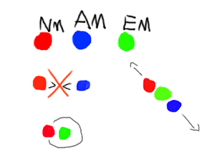

(May 05, 2022) My original idea for the function of magic was Sparklets,
something I will write about later. But I recently came up with this idea.
So, matter holds together the universe. The real universe.
Of course there are also things like particles and quarks at the very base,
but i'm just going to call this a form of matter.
In Diambera, Universe 96, there is Normal, Echo, and Antimatter.
Normal Matter makes up a lot of the universe, and it is predictable.
It is the rocks and flowing and biological material that follow a familiar set of law.
Antimatter is made a bit complicated in Universe 96. It is unpredictable and defies the Normal Matter,
usually destroying it on contact. But there is Echomatter, a sort of middleground between the two.
It changes the properties of either to bounce off of eachother, and, depending on the material and angle,
that makes all kind of funky things. Echomatter is heavier than Normal Matter too,
meaning it often gets caught in an orbit with it, allowing Normal Matter to continually be influenced by it.
The frequency and echo part come from how Echomatter is affected by sound.
At certain, low frequencies, it can vibrate, which is the main way magic is produced- this vibration of normal,
stable matter.
This is all very experimental and I will probably edit this post later but here's a quick drawing.
